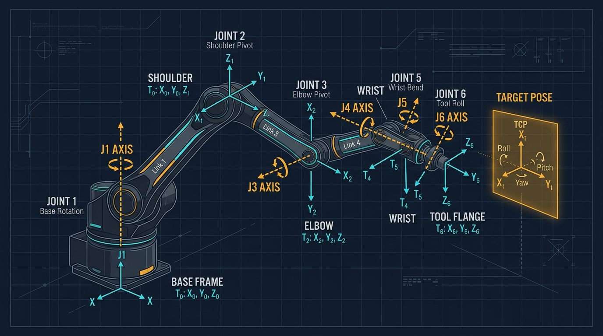

Accuracy vs. Repeatability: The Core Engineering Problem
In industrial automation, a robot's value is often tied to its published precision. However, manufacturers frequently confuse two distinct metrics: repeatability and accuracy. Repeatability is the robot's ability to return to a previously taught physical point. Accuracy is the robot's ability to move to a specific coordinate in 3D space calculated via offline programming (CAD/CAM).

Most industrial 6-axis arms have excellent repeatability (often ±0.02 mm to ±0.1 mm) but poor absolute accuracy (often ±1.0 mm to ±2.0 mm). This discrepancy occurs because the robot's internal mathematical model (the nominal kinematics) assumes perfect link lengths, zero gear backlash, and perfectly aligned joints. In reality, manufacturing tolerances, joint compliance, and thermal expansion introduce geometric errors.
Calibration is the process of measuring these physical errors and feeding the data back into the controller to correct the software model, often improving absolute accuracy by up to 40%.
Calibration is not maintenance; it is quality assurance. A laser tracker can turn a good robot into a great manufacturing tool.- Robotics Engineering, Metrology Division
Level 1: Mastering (Zero Position Calibration)
Before kinematic calibration can occur, the robot must establish a mechanical zero. Known as "mastering" (FANUC) or "referencing" (KUKA), this step tells the motor encoders where the physical zero of each axis is.
Methods include mechanical mastering (using physical datum pins on the arm), zero-setting via absolute encoders (which retain position even after power loss), and mastering via a chronometer. This process only sets the reference point; it does not correct geometric inaccuracies across the entire workspace.
Level 2: Kinematic and Dynamic Calibration Methods
To improve absolute accuracy, engineers must map the actual geometry of the robot versus the theoretical model. This requires external metrology equipment.
Telescoping Ball-Bar Tests
A ball-bar test uses a high-precision linear transducer anchored between the robot's base and a point on the end-effector. The robot is commanded to move in a circle, and the ball-bar measures deviations in radius. While traditionally used for CNC machines, ball-bars (like the Renishaw QC20) are useful for diagnosing backlash, servo lag, and cyclical gear errors in robots.
Laser Tracker Calibration
For high-precision aerospace and automotive applications, a laser tracker (such as the Leica AT960 or Hexagon Absolute Tracker) is the industry standard. A Spherically Mounted Retroreflector (SMR) is attached to the robot's wrist. The robot moves through a sequence of poses spanning its workspace, and the tracker records the exact 3D coordinates of the SMR.
The resulting point cloud is processed by calibration software that calculates the actual link lengths, joint offsets, and gear eccentricities. These parameters are injected into the robot controller as a "kinematic correction table."
| Method | Typical Accuracy Gain | Hardware Cost | Primary Use Case |
|---|---|---|---|
| Mastering / Zeroing | Sets reference only | Low (internal) | After motor/battery replacement |
| Ball-Bar Test | Diagnoses backlash | Medium | Predictive maintenance, gear health |
| Laser Tracker | Up to 40% improvement | High | Offline programming, aerospace drilling |
| Photogrammetry | 20-30% improvement | Medium-High | In-line periodic checks, large cells |
Thermal and Environmental Compensation
A robot's physical dimensions change with temperature. As a manufacturing cell warms up during high-duty cycle operations, the aluminum or cast iron links expand, shifting the tool center point (TCP). High-end calibration systems incorporate temperature sensors and apply thermal compensation models. For critical applications, environments should be maintained within a strict temperature range—typically 15–30 °C—to prevent thermal drift from exceeding the calibrated tolerances.
Standards and Performance Criteria (ISO 9283)
How do engineers objectively prove a robot is calibrated? The international standard ISO 9283 defines the test methods for manipulating industrial robots. It specifies how to measure pose accuracy, distance accuracy, and path accuracy. A full ISO 9283 validation cycle can take up to 4 hours, requiring the robot to execute a standardized sequence of 30+ target points across five defined planes in its workspace. This data is used to generate a formal accuracy certificate for the cell.
Implementation Checklist for Controls Engineers
- Define Tolerance Requirements: Determine if the process actually needs absolute accuracy. If programming is done entirely via teach pendant (point-to-point), repeatability is sufficient and calibration is unnecessary.
- Select Metrology Hardware: Match the tool to the budget. Laser trackers offer the highest precision; photogrammetry is viable for larger, less rigid cells.
- Establish Thermal Baselines: Run the calibration cycle after the robot has reached operating temperature (warm-up cycle) to ensure the kinematic model reflects production conditions.
- Automate the Cycle: Use an automated calibration script to periodically verify the TCP against a fixed datum, detecting drift before it causes scrap parts.
- Update Safety Documentation: If calibration changes the robot's path execution dynamics slightly, ensure the cell's speed and separation monitoring (SSM) parameters are revalidated.
Related Resources
- Integrating 6-Axis Robot Arms with Siemens and Allen-Bradley PLCs
- Open Source Kinematic Solver Code for 6-DOF Robot Arms
- End Effector Selection Guide: Tools, Grippers & Sensors
- Joint Encoders for Robot Arms: Absolute, Incremental & Magnetic Types
- The Complete 6-DOF Robot Arm Guide (2026)
Sources and Methodology
Technical metrics (e.g., 40% accuracy improvement, 4-hour ISO 9283 cycle, 15–30 °C thermal envelope) are drawn from metrology best practices and manufacturer documentation (Leica Geosystems, Hexagon, Renishaw, KUKA, FANUC). Robotics Engineering references ISO 9283 for performance testing criteria. Always validate calibration results against your specific application tolerances and environmental conditions.
What is the difference between robot repeatability and robot accuracy?
Repeatability is the robot's ability to return to the exact same physical point multiple times under the same conditions. Accuracy is the ability of the robot to move to a specific commanded coordinate in 3D space. A robot can have high repeatability but low accuracy if its kinematic model does not match its physical geometry.
When is laser tracker calibration necessary for a robot arm?
Laser tracker calibration is necessary when an application requires high absolute accuracy rather than just repeatability. This includes offline-programmed machining, precision drilling, aerospace assembly, or metrology applications where the robot must follow exact Cartesian coordinates generated from CAD data.
How often should industrial robot arms be calibrated?
Basic mastering (zero-position setting) should be done any time a motor is replaced, an encoder battery dies, or after a collision. Full kinematic calibration using a laser tracker is typically done during initial commissioning, after major mechanical overhauls, or as part of a predictive maintenance schedule if the application tolerances are extremely tight.